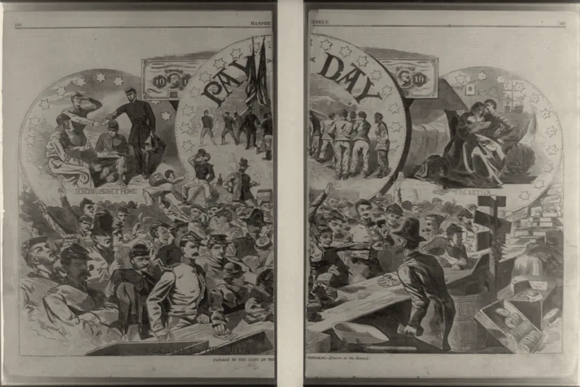

· Edición 31 · 6 min de lectura
Lo que sube con el mínimo: las multas ya no dependen del salario, y el precio de la vivienda social todavía sí
Revisada el · 1 actualización posteriores a la publicación

Grabado sobre dibujo de Winslow Homer, 1863 · Dominio público, Biblioteca del Congreso de Estados Unidos, vía Wikimedia Commons
Lo que sube con el mínimo: las multas ya no dependen del salario, y el precio de la vivienda social todavía sí
Ver todo el tema, de principio a fin →
En pocas palabras. Hoy, el Gobierno, los gremios y las centrales obreras vuelven a negociar el salario mínimo de 2027. Esa cifra no solo cambia sueldos: mueve lo que la ley amarró a ella, como el techo de precio de la vivienda social. Hay salida, y Colombia ya la probó: muchos cobros del Estado suben ahora con una unidad atada a los precios, y en 2026 eso les evitó subir 23%.
El dato curioso. Uno de los primeros salarios mínimos pensados para una familia salió de una fábrica de cosechadoras. En 1907, en Australia, el juez Henry Bournes Higgins tenía que decidir si la Sunshine Harvester pagaba un sueldo «justo y razonable». Hizo algo poco común para la época: oyó a las esposas de los trabajadores y revisó las cuentas de once hogares. Concluyó que un hombre con esposa y tres hijos necesitaba siete chelines al día para vivir en «frugal comodidad». Ajustada con los años, esa cifra fue la base del sueldo en Australia durante unos sesenta años.
Qué pasó. Piense en un comparendo por exceso de velocidad. En 2025 costaba unos 604.100 pesos; en 2026, unos 633.200: subió 4,8%. Atado al salario mínimo, habría subido 23%, como el mínimo, que pasó de 1.423.500 a 1.750.905 pesos.
Otras cosas siguen amarradas. El techo de 150 salarios mínimos para una vivienda de interés social pasó de unos 213,5 a unos 262,6 millones de pesos de un día para otro. Las multas generales del Código de Convivencia también se cuentan en salarios mínimos.
La reunión de hoy llega con la inflación anual en 6,29%, según el DANE, y con los gremios hablando de un alza de 8% a 9,5%.
Cómo llegamos aquí.
- Una regla cómoda. Durante décadas, muchas leyes fijaron cobros en salarios mínimos porque así se actualizaban solos cada enero. (Conocimiento general.)
- Pero el mínimo no mide precios: se negocia. Para 2026 subió 17,2 puntos más que la inflación pasada y la productividad, según el Banco de la República. Lo amarrado subió con él.
- Y los precios miran atrás. Un estudio del Banco de la República de 2022 estimó que por cada punto que sube el mínimo, la inflación sube entre 0,09 y 0,14 puntos. Y la inflación pesa más abajo: en septiembre, los precios subieron 0,41% para los hogares pobres y 0,32% para los de ingresos altos.
Ya pasó antes. En junio de 1994, los precios en Brasil subían casi la mitad en un solo mes. Todo se ajustaba con la inflación pasada, y la inflación nunca olvidaba. Durante tres meses, precios y salarios se anotaron en una unidad nueva, la URV; el 1 de julio, esa unidad se volvió moneda, el real. El economista Edmar Bacha, uno de sus creadores, explica que la URV sincronizó de una vez todo el sistema de indexación.
El patrón. Cuando muchos precios se ajustan mirando el mismo número del pasado, la inflación hereda su propia memoria. Para cortarla no basta con frenar ese número: hay que soltar las amarras.
¿Hay salida? Sí, y una parte ya anda.
- La unidad colombiana. El Plan de Desarrollo de 2019 ordenó sacar del salario mínimo cobros, multas y tarifas. En 2023 se creó la UVB, la Unidad de Valor Básico, que sube con la inflación sin alimentos ni precios regulados; hoy vale 12.110 pesos. Comparendos y cuotas moderadoras de las EPS ya se calculan con ella. En enero, el Ministerio del Trabajo contó 225 bienes y servicios desligados y 14 en estudio.
- La regla brasileña. La Constitución de Brasil de 1988 prohíbe atar el salario mínimo «para cualquier fin». En 2008, el Supremo Tribunal Federal precisó que tampoco sirve para calcular otros pagos a trabajadores: subir el mínimo no debe arrastrar más de lo que se quiso subir.
- Vivienda en pesos. En enero, el Ministerio de Vivienda publicó un borrador para pactar la vivienda social en pesos desde la promesa de compraventa. No encontramos que se haya expedido.
Pero ojo.
- No todo es amarre. Un estudio del Banco de la República, con datos de 1999 a 2008, halló que si el mínimo sube 10%, el almuerzo fuera de casa sube 3,07% con el tiempo. Eso es costo real: los sueldos de quienes cocinan y atienden.
- La vivienda es delicada. Camacol, el gremio de los constructores, recuerda que el techo es un límite, no un aumento automático. Y expertos citados por Portafolio advierten que, como el techo está en una ley, cambiarlo por decreto sería ilegal.
- Brasil no terminó el trabajo. Un estudio de 2014 concluye que su desindexación quedó incompleta.
Lo que ya habíamos contado. El 1 de octubre escribimos sobre el trabajo informal: más de la mitad de quienes trabajan lo hacen sin contrato ni pensión, y un mínimo alto frente a lo que gana la mayoría puede dejar a más gente por fuera (ver esa edición). Hoy miramos otro efecto del mismo número.
Qué hacer con esto
Para ir pensando. Quien vaya a comprar vivienda social puede revisar si la promesa de compraventa fija el precio en pesos o en salarios mínimos: en salarios, cada enero puede subir.
Cómo prepararse. Para el presupuesto de 2027: lo que se cobra en salarios mínimos sube con el mínimo; lo que se cobra en UVB, cerca de la inflación.
Ojo con el cuento. «El aumento del mínimo es solo para quienes ganan el mínimo» no es toda la historia: también sube lo que la ley amarró. Y «desindexar» no baja precios: los pone a subir a otro ritmo.
Qué podríamos exigir. Una lista pública de lo que sigue atado al mínimo antes del decreto de diciembre, y que el Congreso pase a la UVB las multas que aún dependen del salario.
Dos lecturas
Soltarlo todo. El mínimo es un pacto entre trabajadores y empresas, no un índice de precios. Mientras arrastre multas, techos y tarifas, cada negociación se vuelve una discusión sobre la inflación de todos.
Algunas amarras protegen. Atar ciertos valores al mínimo evita que se queden atrás: la pensión mínima es igual al mínimo por mandato de la Constitución. (Conocimiento general.) Soltarlas de golpe puede pasarle la pérdida a quien menos tiene.
Quién decide y cuándo
Quién decide. El mínimo de 2027 lo negocia la Comisión de Concertación. Lo que está en decretos lo puede desligar el Gobierno; lo que fijó una ley, como el techo de la vivienda social, el Congreso.
Cuándo. Acuerdo del mínimo hasta el 15 de diciembre; sin acuerdo, decreto antes del 30. Para desligar lo que falta no hay fecha.
Cómo participar. Los ministerios publican sus borradores de decreto para comentarios: el de vivienda los recibió hasta el 24 de enero.
Seguimiento de la decisión
Pendiente · sin fecha fija
Gobierno nacional (Ministerios del Trabajo, Hacienda y Vivienda); lo que está fijado por ley, el Congreso: Desligar del salario mínimo los cobros y precios que todavía dependen de él, entre ellos el techo de precio de la vivienda de interés social, antes de que rija el mínimo de 2027.
Prometido desde
La Ley 1955 de 2019 ordenó calcular desde 2020 los cobros, multas y tarifas en otra unidad; la Ley 2294 de 2023 creó la UVB. En enero de 2026, el Ministerio del Trabajo dijo que había 225 bienes desligados y 14 en estudio, entre ellos la vivienda de interés social. El decreto de vivienda salió como borrador y no encontramos que se haya expedido. Sin fecha; la referencia es el decreto del mínimo, a más tardar el 30 de diciembre.
La paradoja del día
El 1 de enero, quien gana el mínimo recibió 327.405 pesos más al mes. Ese mismo día, el techo de precio de la vivienda social que podría comprar subió unos 49 millones. Llegó puntual a los dos.
Para conversar
La pregunta. ¿Qué debería subir al ritmo del salario mínimo y qué al de los precios? ¿Y qué podríamos hacer para que eso se decida a la vista y no por costumbre?
Para leer más
Myth and Measurement: The New Economics of the Minimum Wage, de David Card y Alan B. Krueger (Princeton University Press, 1995; reeditado en 2015; en inglés). Dos economistas miran alzas reales del mínimo en Estados Unidos y qué pasó con el empleo. Sirve para el debate de fondo de la negociación.
¿Le interesa ver las fuentes?
28 fuentes: 4 académicas, 8 oficiales, 1 de datos, 1 de una organización, 14 de prensa.
- Prensa Infobae. Salario mínimo 2027: Gobierno, empresarios y trabajadores fijan fechas para la concertación
- Prensa La República. Los gremios ven una posible alza del salario mínimo para 2027 entre 8% y 9,5%
- Datos DANE. Índice de Precios al Consumidor: principales resultados, septiembre de 2026
- Prensa El País (Cali). La inflación anual en Colombia mantiene la tendencia al alza; según el Dane, los precios variaron 6,29 % a septiembre
- Prensa Consultorsalud. Aumento del salario mínimo en Colombia 2026: esto es lo que debe saber – decretos 1469 y 1470 de 2025
- Oficial Función Pública. Ley 1955 de 2019, Plan Nacional de Desarrollo 2018-2022 (artículo 49: cobros, sanciones, multas y tarifas en UVT)
- Oficial Departamento Nacional de Planeación. Ley 2294 de 2023: por el cual se expide el Plan Nacional de Desarrollo 2022-2026 «Colombia potencia mundial de la vida»
- Oficial Ministerio de Hacienda y Crédito Público (compilación normativa). Resolución 3488 de 2025: por medio de la cual se establece el valor de la Unidad de Valor Básico (UVB) para la vigencia 2026
- Prensa RCN Radio. ¿Cuánto vale la multa por exceso de velocidad en Bogotá?
- Prensa Portafolio. Código de tránsito 2025: esta infracción puede costarle más de lo que cree en Colombia
- Prensa Consultorsalud. Copagos y cuotas moderadoras 2026: montos, porcentajes y topes en UVB – circular externa 048 de 2025
- Prensa Asuntos Legales. Así quedan las multas de convivencia que suben con incremento del mínimo y la UVB
- Prensa Infobae. Gobierno Nacional retoma plan para desligar precios de la vivienda social del salario mínimo tras ajuste del 23% en 2026
- Oficial Ministerio de Vivienda, Ciudad y Territorio (publicado por Ámbito Jurídico). Proyecto de decreto sobre el tope general al valor de la vivienda de interés social (VIS), enero de 2026
- Prensa RTVC Noticias. Presidente Petro califica de «aberración económica» indexar la vivienda al salario mínimo
- Prensa Portafolio. Salario mínimo 2026: impacto en el precio de la vivienda VIS y debate por desindexación
- Prensa La República. Constructores aclaran a Petro costos de proyectos de vivienda por aumento del mínimo
- Prensa Valora Analitik. Gobierno reconoce golpe a inflación por fuerte alza del salario; quiere control de precios, una medida que ha fracasado
- Académica Banco de la República (Arango y otros, 2022). Efectos macroeconómicos del salario mínimo en Colombia (Ensayos sobre Política Económica 103)
- Oficial Banco de la República. Recuadro 1: Potenciales efectos del incremento del salario mínimo sobre la inflación. Informe de la Junta Directiva al Congreso, marzo de 2026
- Académica Banco de la República (Arango, Ardila y Gómez, Borradores de Economía 584). Efecto del cambio del salario mínimo en el precio de las comidas fuera del hogar en Colombia
- Oficial Supremo Tribunal Federal de Brasil. A Constituição e o Supremo: artigo 7º (salário mínimo, vedada sua vinculação para qualquer fim)
- Oficial Tribunal Regional do Trabalho da 4ª Região (Brasil). O adicional de insalubridade e a súmula vinculante nº 4 do STF
- Académica IEPE/Casa das Garças (Bacha, 2024). Antecedents of the Real Plan
- Prensa B3 Bora Investir (Agência Brasil). Há 30 anos, Plano Real derrubava hiperinflação e estabilizava economia
- Académica Revista de Economia Política (Roncaglia de Carvalho, 2014). The persistence of indexation in post-Real Brazil
- Organización National Museum of Australia. Harvester Judgement (Defining Moments)
- Oficial Parliamentary Education Office (Australia). Harvester Judgement
Glosario
- Salario mínimo: el sueldo más bajo que se puede pagar por una jornada completa. En 2026 son 1.750.905 pesos al mes, más el auxilio de transporte.
- Indexar: atar un valor a otro para que suba cuando ese otro sube.
- Desindexar: soltar esa amarra; el valor pasa a actualizarse con otra regla.
- UVB (Unidad de Valor Básico): unidad creada en 2023 para calcular multas, tarifas y cobros del Estado. Se ajusta cada año con la inflación sin alimentos ni regulados.
- Vivienda de interés social (VIS): vivienda con precio máximo fijado por ley, a la que se aplican subsidios del Estado.
- Comisión de Concertación: mesa donde el Gobierno, los gremios y las centrales obreras negocian el salario mínimo.
- URV: unidad de cuenta que Brasil usó entre marzo y junio de 1994, antes de crear el real.
- Inflación inercial: la que se repite porque los precios se ajustan según la inflación pasada.
Nota metodológica
Hoy se reúne la Comisión de Concertación del salario mínimo, un tema que veníamos aplazando hasta esta fecha. No contamos el resultado de la reunión: al cierre no había noticia. Escogimos un ángulo que no habíamos tratado: no cuánto debe subir el mínimo, sino qué arrastra cuando sube. Después de una edición dura ayer, buscamos un tema que se pudiera contar con algo de humor; las cifras no se tocan.
Hicimos unas 50 búsquedas en español, portugués e inglés: barrido de Colombia, América Latina y el mundo del 11 al 13 de octubre, revisión de las decisiones abiertas y búsquedas dirigidas sobre la UVB, la vivienda social, los estudios del Banco de la República y el caso de Brasil. No pudimos abrir ningún documento completo; trabajamos con resúmenes, fichas y resultados de búsqueda, y no les atribuimos más de lo que dicen. De 28 fuentes, 15 no son de prensa.
Quedó sin verificar o con límites:
- El alza del mínimo de 2026 fue de 23% según el decreto; varios medios, y nuestra edición del 1 de octubre, dijeron 23,7%. Con el auxilio de transporte fue 23,2%, según el Banco de la República.
- El comparendo de 2026 (52,29 UVB) lo tomamos de RCN Radio y lo comprobamos con la cuenta: 52,29 por 12.110 pesos. El de 2025, de Portafolio. El techo de la vivienda social, de Infobae; cuadra con 150 salarios mínimos de cada año.
- El alcance exacto de lo que ya se desligó (225 bienes, 14 en estudio) viene de la prensa, que citó al Ministerio del Trabajo en enero; no encontramos la lista oficial. Tampoco el decreto final de vivienda.
- Las cifras del estudio de 2022 vienen de reportes de prensa sobre el documento; se estimaron en años de inflación baja. El de los almuerzos es un estudio de precios por establecimiento con datos hasta 2008.
- Lo de Brasil viene de un documento de trabajo de Edmar Bacha, de una nota de Agência Brasil y de un artículo de 2014 que leímos solo en su resumen.
- Lo de Australia, de dos páginas oficiales de ese país, que difieren en detalles menores.
Puntaje de impacto. Filtro primero (las cuatro condiciones de nudo) y luego puntaje de 1 a 3 en alcance, gravedad, duración, cercanía y decisión en curso; gravedad y cercanía valen doble (máximo 21).
| Tema | Alcance | Gravedad | Duración | Cercanía | Decisión | Total | Resultado |
|---|---|---|---|---|---|---|---|
| Lo que sube con el mínimo | 3 | 2 | 2 | 3 | 3 | 18 | Elegido (edición 31) |
| Decreto de la protesta | - | - | - | - | - | - | Ya tratado (edición 28); sin texto publicado |
| Estatuto antiterrorista | 3 | 2 | 2 | 3 | 1 | 16 | Sin texto radicado |
| Metro de Bogotá | 2 | 1 | 2 | 3 | 1 | 13 | No pasa el filtro: sin daño medido |
| Tregua energética Rusia-Ucrania (mundo; sin canal claro) | 3 | 3 | 2 | 1 | 2 | 15 | Lejano |
| Presupuesto de 2027 | - | - | - | - | - | - | Aplazado al resultado de las plenarias |
Lo que sube con el mínimo pasa las cuatro condiciones de nudo: se repite cada enero, tiene un mecanismo (leyes y contratos que fijan valores en salarios mínimos), alguien lo puede cambiar (Gobierno y Congreso, que ya crearon la UVB) y el daño se mide (techos de vivienda 23% más altos y un efecto estimado sobre la inflación, que pesa más en los hogares pobres). Ningún otro tema nuevo llegó a 17 y pasó el filtro: hoy hay una sola edición.
Revisamos las decisiones con plazo en los próximos siete días. Decreto de la protesta (edición 28): en la alocución del 12 de octubre, el presidente dijo que se conocerá esta semana; agregamos una actualización. La CAR (edición 18) y el presupuesto (ediciones 3 y 22) siguen pendientes, sin noticia. El salario mínimo (edición 12): solo anotamos la revisión.
El grabado salió de Wikimedia Commons: un día de pago dibujado por Winslow Homer para Harper's Weekly en 1863, en dominio público, de la colección de la Biblioteca del Congreso de Estados Unidos. Commons limitó varias búsquedas seguidas; lo encontramos al tercer intento.
El libro no está en Santo & Seña: lo buscamos en su catálogo y no aparece. Autor, año y editorial los confirmamos en catálogos de bibliotecas y en la ficha de la editorial.